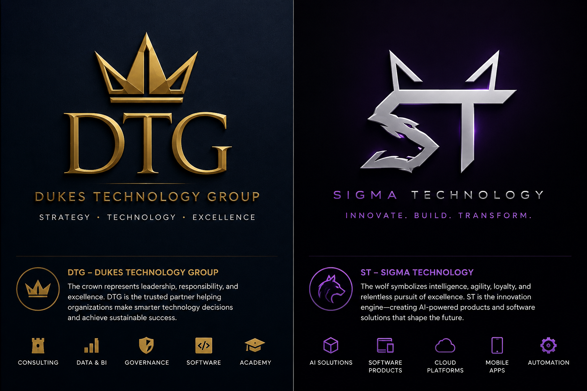

A DUKES TECHNOLOGY GROUP INITIATIVESigma
Sigma
Technology.
INNOVATE. BUILD. TRANSFORM.
A space for software and applications developed under the Sigma Technology name.
Explore the software space
ST — Sigma Technology
The wolf symbolizes intelligence, agility, loyalty and the pursuit of excellence. Sigma Technology is the innovation space for software and applications.
SOFTWARE & APPLICATIONS
Built for what comes next.
This is where Sigma Technology products will live as they are ready to share.
Product space
There are no public product listings yet. Check back for software, applications and launch details.
AI solutionsSoftware productsCloud platformsMobile appsAutomation
GET IN TOUCH
Contact DTGHave an idea or a question?
Connect with DTG about Sigma Technology.